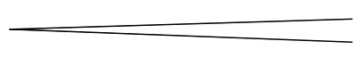
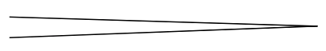
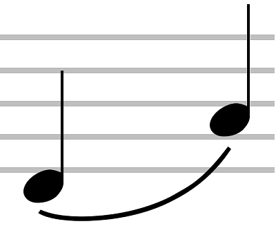
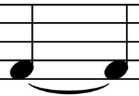
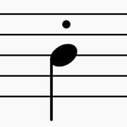
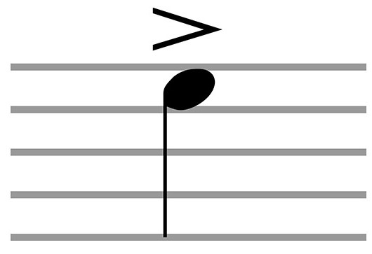
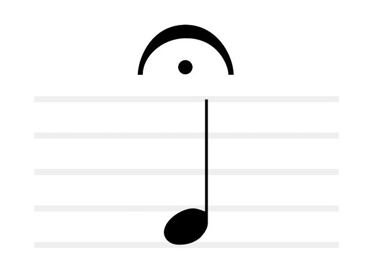
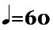
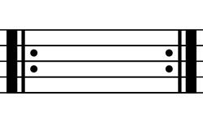
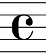

This page will tell you what italian music terms and what music symbols you will need to know.
Italian Terms
| Term | Definition |
|---|---|
| a tempo | in time |
| accelerando (or accel.) | gradually getting faster |
| adagio | slowly |
| allegretto | fairly quicker |
| allegro | quick |
| andante | at a walking pace |
| cantabile | in a singing style |
| crescendo (or cresc.) | gradually getting louder |
| da capo (or D.C.) | from the beginning |
| decrescendo (or decresc.) | gradually getting quieter |
| diminuendo (dim.) | gradually getting quieter |
| dolce | sweet |
| fine, al fine | end |
| f (forte) | loud |
| ff (fortissimo) | very loud |
| legato | smoothly |
| mf (mezzo forte) | moderately loud |
| mp (mezzo piano) | moderately soft |
| moderato | at a moderate speed |
| p (piano) | quiet |
| pp (pianissimo) | very quiet |
| rallentando (or rall.) | gradually getting slower |
| ritardando (or ritard. or rit.) | gradually getting slower |
| staccato (or stacc.) | short and detached |
Music Signs
| Sign | Meaning |
|---|---|
|  | crescendo (gradually getting louder) |
|  | decrescendo or diminuendo (gradually getting quieter) |
|  | slur |
|  | tie |
|  | staccato |
|  | accent |
|  | fermata |
|  | play at tempo 60 crotchet beats per minute |
|  | repeat sign |
|  | common time (4 crotchets a bar) |
Note: tables only provide SOME of the knowledge that is needed for the exam. External learning may be required for the exam